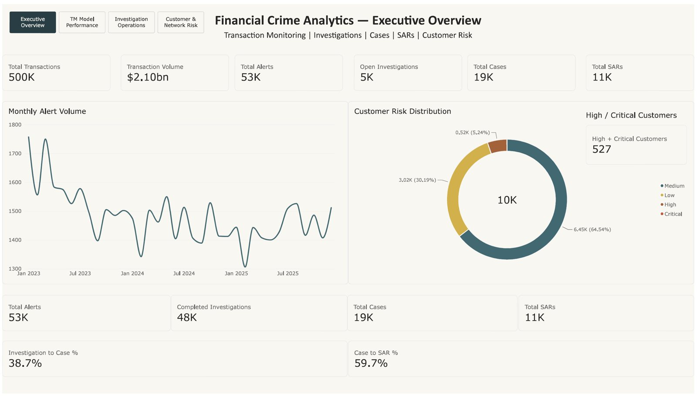
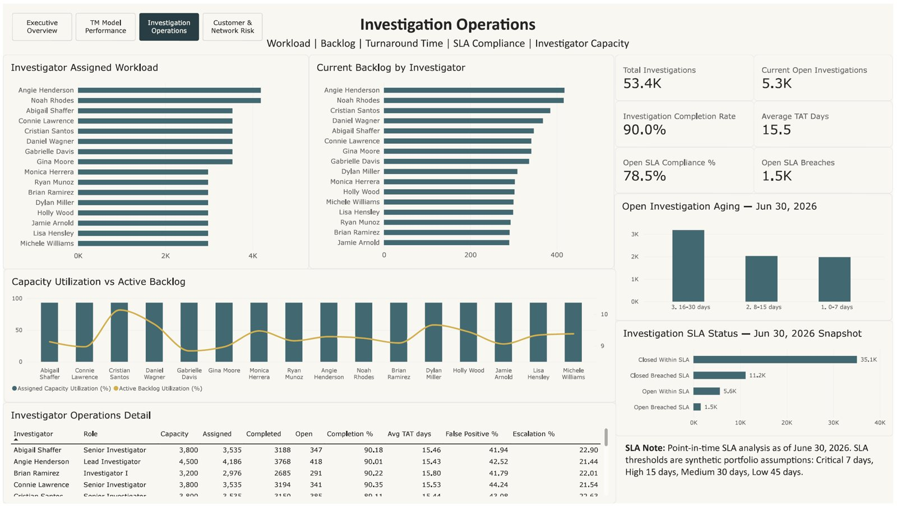
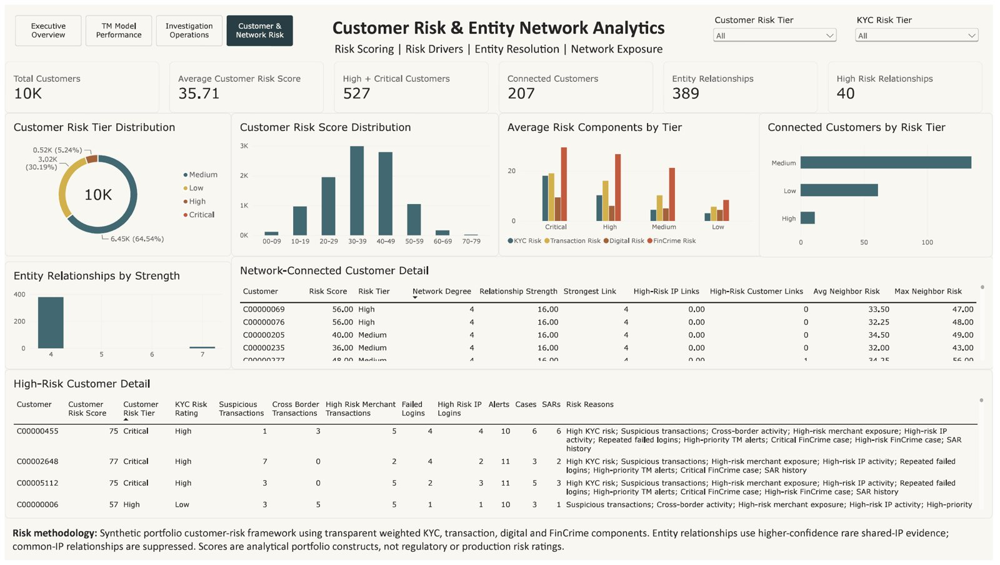

AI & risk · Case study 01
One detection rule was raising two of every three fraud alerts.
I built a transaction-monitoring analytics platform for a simulated bank, then used it to answer the question every financial-crime team argues about: which alerts are worth an investigator’s time?
- Role
- Solo: data, SQL, BI, validation
- Data
- 500K synthetic transactions, $2.1B volume
- Stack
- Python, SQL, Power BI
- Code
- GitHub ↗

01 — The questionEvery alert costs an investigator’s hour. Which ones earn it?
Banks run transaction-monitoring rules that flag suspicious activity. Each flag becomes an alert, each alert needs a human review, and most turn out to be nothing. Too many alerts bury investigators. Too few and real money laundering slips through. In six years in banking and credit-risk analytics I watched teams make this trade-off by gut feel. I wanted to build the system that lets them make it with data.
02 — The dataA whole bank, built from scratch
Real financial-crime data is confidential, so I generated a realistic one. Python scripts create customers, accounts, cards, devices, IP addresses, merchants, loans, login events and 500,000 transactions. They also create everything downstream: alerts, investigations, case notes, investigator actions, SAR filings and an audit trail. Everything lands in a relational schema and is loaded into SQL.
03 — The methodDetection in SQL, decisions in Power BI
I wrote eight detection scenarios as SQL, each mirroring a pattern real monitoring teams look for:
- structuring: cash deposits kept just under the reporting threshold
- money moving in and straight back out
- large wire transfers
- high-risk geographies
- dormant accounts that suddenly wake up
- unrelated customers sharing one device
- repeated round-dollar amounts
- payments to high-risk merchants
From there, 40 SQL scripts measure:
- each rule’s effectiveness and false-positive rate
- how alerts convert into cases and SARs
- investigator workload, turnaround time and SLA aging
- customer risk scoring and entity networks
The results feed a four-page Power BI report: Executive Overview, TM Model Performance, Investigation Operations, and Customer & Network Risk.

04 — The findingOne noisy rule, and a price tag for quieting it
The bank raised 53.4K alerts at a 42.5% false-positive rate. Most of that volume came from one place: the high-risk-merchant rule (TM008) raised 36,164 alerts, about 68% of the total. It was also one of the weaker rules at turning cases into SARs: 60% of its cases became SARs, compared with 83% for the best rule.
So I modelled the trade-off. The threshold analysis raises TM008’s alert-score cutoff step by step and tracks two lines: the share of investigator workload removed, and the share of genuine SARs still caught. Up to a point, workload drops while SAR retention barely moves. Past it, every hour saved starts costing real detections. That curve turns “we have too many alerts” into a decision a compliance lead can sign off on.
| Rule | Alerts | False-positive rate | Case → SAR |
|---|---|---|---|
| TM003 (dormant account) | 1,350 | 44.5% | 82.7% |
| TM002 (high-risk geography) | 1,270 | 43.1% | 79.6% |
| TM006 (large wire) | 3,000 | 41.7% | 74.3% |
| TM001 (structuring) | 3,000 | 41.6% | 64.9% |
| TM008 (high-risk merchant) | 36,164 | 42.5% | 60.4% |
| TM005 (shared device) | 1,528 | 41.7% | 49.3% |
05 — Trust62 checks before anyone sees a number
A dashboard is only as good as the data under it, so the platform ships with an automated validation suite. It runs 62 checks across:
- data quality: unique IDs, no orphaned alerts, valid score ranges
- lifecycle logic: no investigation starts before its alert, and every closed case has a disposition
- audit trail, customer risk, entity networks, and the Power BI layer itself
The latest run: 60 pass, 2 warn, 0 fail. This is the habit I took from banking, where I built a data-quality framework that cut inconsistencies by 35%. Prove the numbers first.


06 — What I’d do nextFrom rules to learning
The rules here are deliberately transparent, which is what regulators expect. The natural next step is a machine-learning layer on top: a model that scores each alert’s likelihood of becoming a SAR, so investigators work the queue in order of risk instead of arrival. Investigator dispositions become the training labels. This platform already captures them.
A note on the data. Everything here is synthetic, generated to behave like a real bank. The numbers show the method, not any real institution’s risk.